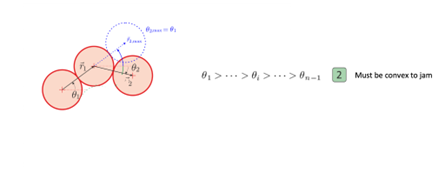

I - Introduction
If you were to pick up a salt-filled saltshaker and turn it upside down, some salt might fall out from the shaker immediately after. However, they very quickly become clogged within the bottle. Hence, the need to shake it. In our problem, we have a similar phenomenon. We have some spheres (much bigger than a grain of salt) inside a bottle and we wish to find out the answers to the following questions:
- How long does it take for the system to start clogging?
- What bottle shapes can prevent blockage?
To find out the answers to these questions, we shall study several parameters:
- Diameter of opening
- Angle of opening
II - Experimental Setup
To study the problem, we would have to vary the parameters listed above and conduct hundreds of experiments. To reduce the complexity of our experimental set-up, we decided to use a 2D funnel.
To construct this set-up, we used a laser cutter to cut the funnel walls (made out of 5mm plexiglass) and sandwiched the walls between 2 plates of plexi-glass. With this set-up, we could very easily vary the different parameters:
- Size of opening - by sliding the funnel walls horizontally to adjust them
- Angle of opening - by swapping out the bottom of the funnel walls
For each experiment, we performed the following steps:
- Fill the reservoir with a fixed number of spheres (262 spheres in our case)
- Release the weight connected to the sliding bar (to ensure a consistent release of the spheres)
- Measure the time it takes for the hopper to become stuck
Figure 1 : Experimental Set-up
We performed a total of 410 experiments using 262 spheres with a diameter of 4mm for different opening sizes and for two different angles (34° et 60°). From our experiments, we were able to obtain the following results:
III - Experimental Results
Mean Blockage Time
In the above graph, we noticed that the mean blockage time appears to follow some sort of power curve. To determine the value of the exponent, we proceed to plot the log-blockage time against the log of the opening ratio.
We were then able to determine the values of the exponents for both 34 degrees and 60 degrees as 3.0 ± 0.5 and 2.7 ± 0.5 respectively.
Generally, the mean blockage time of the system has a behaviour of t
block ∝ D
p.
Blockage Probability
It is intuitive that blockage would happen very frequently when a hopper with a small opening is used. Likewise for the other extreme case – blockage would never happen when a hopper with a large opening is used. Between these two extremes, we observe a transition zone which resembles an inverted logistics curve.
From our results, this transition zone took place between D = 3.0 to D = 5.0 for 34 degrees and D = 2.3 to D = 4.2 for 60 degrees.
Additional Statistics
For each experiment, we also counted the number of spheres that are involved in the blockage of the system. We then compiled the data and obtained the results below.
For instance, for a value of D = 1.1875, there is a 95% probability that an arch causing the blockage is formed by 2 spheres and there is a 5% probability that it is formed by 3 spheres. These results would come in useful in the theoretical approach section below.
IV - Numerical Simulations
Apart from the experiments that we conducted in real life, we also ran a series of numerical simulations on Python. We performed the following:
- Create a container with a hopper of a certain angle θ
- We randomly place 300 spheres above the hopper and let them fall
- The spheres would converge at the opening of the hopper and clog after a certain time (if the conditions are right)
We modeled frictional losses by assuming the velocity coefficient restitution coefficient as 0.75 for both the walls and spheres.
We performed these numerical simulations for 8 different angles and obtained a similar behaviour across all angles.
Graphs of Blockage Probability against opening ratio (D) for different angles
We also measured the blockage time of the system across different angles. While our results seem to be well-modeled by a power curve, we do not observe any clear trend other than the fact that they all fluctuate around a value of p = 4.
Graphs of the log of Mean Blockage Time against the log of opening ratio (D) for different angles
V - Theoretical Modeling
We also looked at this problem from a theoretical perspective. We can start off by looking at an instance of a blockage.
From the above image, we can define a contiguous series of spheres as a n-chain where n is the number of spheres.
We can look at two examples in the image above.
However, a n-chain may not necessarily cause a blockage in the system. It is only under certain conditions that a n-chain can cause a blockage in the system. We shall define these chains as n-arches.
The conditions that we subject them would be:
- Spheres must be arranged from left to right

- Spheres must be convex
- Spheres must not clip into each other
- The span of the spheres must be wider than the opening of the hopper
From this model, we can calculate the blockage probability for a given system.
Step 1: We start off with a single sphere.
Step 2: The second sphere can be positioned anywhere within a π radians window. We assume that the probability of it being placed at any angle within this window is uniform.
For the third sphere, the window would be smaller.
Step 3: For the upper bound, it is bounded by θ
1 for an n-arch to be convex. For the lower bound, to avoid the third sphere from clipping into the first sphere, the minimum angle needs to be at least π/3 radians greater than θ
1.
This would mean the window of placement would only be 2π/3 radians. You may refer to the illustration above for a visual aid.
We can make a similar assumption that the third sphere has an equal probability of being positioned at any angle.
Step 4: We can repeat Step 3 for subsequent spheres.
From the above model, we can calculate the probability distribution function for an arch of n disks to have a horizontal length of a
n(x).
Correspondingly, we can also calculate the cumulative probability for an arch of n disk to jam the hopper.
As we noticed in our experiments, for a fixed size of the hopper opening, blockages are composed of different numbers of spheres. We can use the statistics we collected in our numerical simulations and experiments to calculate the expected jamming probability for different sizes of the hopper opening.
From this model, we should expect to get graphs seen below which agrees well with our experiments and our numerical simulations.
VI - 3D funnels
From the 2D case, the probability of blockage is proportional to the number of possible configurations of the arches. From literature [4], we can infer that:
- Dcritical,3D < Dcritical,2D
- p3D < p2D
VII - Clearing the blockage
From the numerous experiments that we performed, we noticed that we can sometimes unclog the system easily by introducing a small perturbation. We noticed this phenomenon in one of our experiments.
- A blockage at the hopper is formed.
- On the top left corner, a sphere falls and lands on the mass of spheres jammed above the hopper.
- The perturbation introduced by the falling sphere is sufficient to unclog the system.
From literature and from our experiments, we understand that there is a range of values of D where the hopper may be unclogged by introducing a small perturbation.
The following figure was taken from a paper studying a similar phenomenon.
This suggests that if we could introduce small perturbations to the system, we would be able to push the blockage probability curves downwards towards 0 in the relevant window.
To take advantage of this phenomenon, we can perhaps use a bottle shape like this.
- By turning the bottle upside down, a huge bulk of the spheres would fall directly downwards towards the hopper. At the same time, a small number of spheres would take the longer route and travel within the handles.
- The main bulk of the spheres arrive at the hopper first and forms an arch - causing a blockage.
- The small number of spheres taking the longer route via the handles would then arrive and land on the jammed bulk of spheres. This perturbation would then break the arch and unclog the system.
After clearing the blockage the first time, we expect another arch to form and clog the system again. To overcome this, we can introduce an infinite cycle of:
- Arch formation
- Perturbation of the system
- Breakage of the arch
To apply this to the case of the baby bottle, an ideal bottle shape that prevents blockage would look like the following:
An arch forms and breaks until all the spheres in the bottle have been emptied.
Based on our initial results in the 2D case and taking advantage of the phenomenon described above, we expect the blockage probability for such a bottle to have:
- The transition zone ending at a smaller value as in the case of a 3D bottle.
- A much steeper drop within the transition zone due to the constant breakage of the arches.
VIII - Bibliography
- Hafez, A., Liu, Q., Finkbeiner, T., Alouhali, R. A., Moellendick, T. E., & Santamarina, J. C. (2021). The effect of particle shape on discharge and clogging. Scientific Reports, 11(1). Link
- Janda, A., Zuriguel, I., Garcimartín, A., Pugnaloni, L. A., & Maza, D. (2008). Jamming and critical outlet size in the discharge of a two-dimensional silo. EPL (Europhysics Letters), 84(4), 44002. Link
- Park, S.-S., & Kim, E. S. (2020). Jamming probability of granular flow in 3D hopper with shallow columns: Dem simulations. Granular Matter, 22(4). Link
- Thomas, C. C., & Durian, D. J. (2013). Geometry dependence of the clogging transition in tilted hoppers. Physical Review E, 87(5). Link
- To, K., Lai, P.-Y., & Pak, H. K. (2001). Jamming of granular flow in a two-dimensional hopper. Physical Review Letters, 86(1), 71-74. Link
- Valdes, J. R., & Santamarina, J. C. (2008). Clogging: Bridge formation and vibration-based destabilization. Canadian Geotechnical Journal, 45(2), 177-184. Link